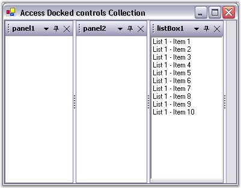
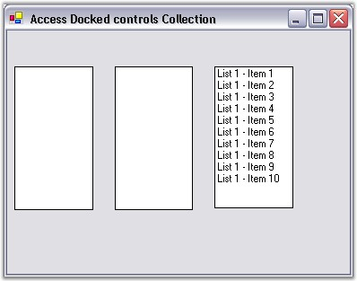

The DockingManager.Controls property returns an enumerator that may be used for accessing the controls that are currently associated with the DockingManager. To access and modify the DockingManager’s control, the contents of the enumerator should first be copied to a temporary collection.
Step 1: Create the respective controls and dock the control through design by setting EnableDocking on dockingManager property to true and follow the below given steps to enable, access and modify the docked controls.

Figure 102: Docked Controls
Step 2: Access and modify the dockable controls.
The below given code snippet accesses the docked controls, disable docking and then disposes the dockable controls.
|
[C#]
//Getting the Controls into an ArrayList. IEnumerator ienum = this.dockingManager.Controls; ArrayList dockedctrls = new ArrayList(); while(ienum.MoveNext()) dockedctrls.Add(ienum.Current); // Iterating through the collection to perform the required operation. foreach(Control ctrl in dockedctrls) { // Disabling the docking and disposing control. this.dockingManager.SetEnableDocking(ctrl, false); ctrl.Dispose(); } |
|
[VB.NET]
'Getting the Controls into an ArrayList. Dim ienum As IEnumerator = Me.dockingManager.Controls Dim dockedctrls As ArrayList = New ArrayList() Do While ienum.MoveNext() dockedctrls.Add(ienum.Current) Loop 'Iterating through the collection to perform the required operation. For Each ctrl As Control In dockedctrls 'Disabling the docking and disposing control. Me.dockingManager.SetEnableDocking(ctrl, False) ctrl.Dispose() Next ctrl |

Figure 103: List Box disabled from Docking